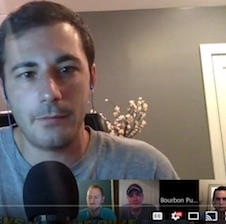
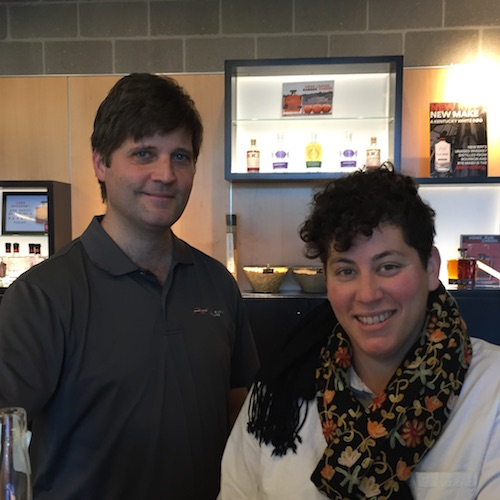
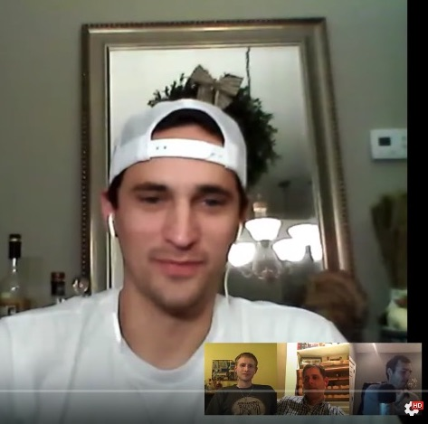
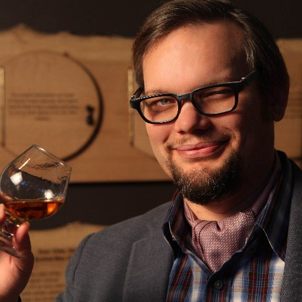
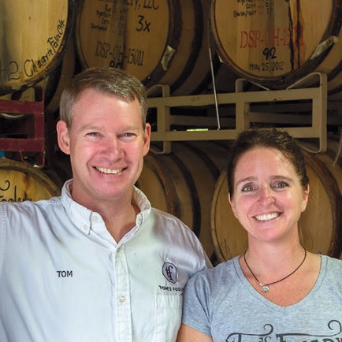
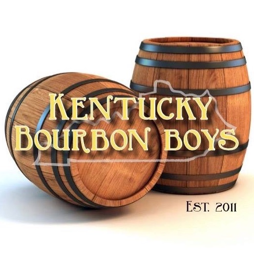
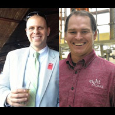
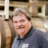

-
EPISODE
077
12.16.16
61:31

Jimmy Russell, Master Distiller and Legend at Wild Turkey, sits down to tell his story. He thinks he’s “Plain Ol’ Jimmy” but once you hear his stories about childhood, befriending the likeness of greats in the industry, and sharing his wealth of knowledge you will see he really is an icon. Read Show Notes
- I want to talk about your history before Wild Turkey.
- Talk a little bit about your childhood and upbringing. Sports, basketball, track, baseball.
- I know your father and grandfather were in this whiskey business, is that why you got into the bourbon industry?
- Were you always around bourbon?
- What made you come to Wild Turkey in beginning?
- What was the state of Wild Turkey when you joined?
- How big was the operation?
- Who were your mentors?
- How have you embraced a lot of modern distillation techniques with computers and automation taking over?
- What was life like for you before the boom?
- Did you ever make any radical changes to Wild Turkey?
- You were best friends with the greatest minds in the industry before bourbon was cool. Talk about the comradery between people like you, Elmer, Booker, and the like.
- Now that bourbon is in the spotlight, are you hesitant on taking a backseat because at 82 years old, you won’t stop and you continue to travel to talk about Wild Turkey.
- Your son Eddie now has taken the spot light. What’s it mean to you that you get to trust the business to him?
- From @bourbonooga: Do they wish the old distillery was still down by where Warehouse A sits?
- From @Primo55: The eternal debate: Cheesy Gold Foil 12yr or Split Label 12 yr?
- What do you think is the best product that ever came out of here?
- Give us your thoughts on the 6-8 vs older aged bourbons?
- From @BreakingBourbon: Share a drink with anyone past/present/future who would it be and why?
- What are some of those things that you want to leave as a legacy?
-
EPISODE
076
12.09.16
31:23

Kevin Didio, Manager of Kentucky Visitor Experience at Bulleit Frontier Experience, talks about his career in bourbon with multiple distilleries, dives into the history of Stitzel-Weller and IW Harper, and talks about the visitor attractions you can see at the reinstated Stitzel-Weller Distillery. Read Show Notes
- Talk about your role here at the Bulleit Frontier.
- Before we talk about some of the other positions you've held, Talk about how you got into bourbon. I found my calling in college, what about you?
- Talk about your career with various players in the industry
- Talk about more about your time at Jim Beam and what you were doing
- This is also the historic site of the Old Fitzgerald / Stitzel-Weller Distillery. Now, we do have a lot of people listening for the education, so talk about the history of the distillery itself.
- Can you comment on what you think made people Stitzel-Weller crazy?
- Talk about what's happening on the grounds here today. Distillation? Aging? Bottling? Brands?
- Is there a possibility that Bulleit can have the same product as the famed Stitzel-Weller?
- Talk about the bottling happening here
- Give people the small run-down of Bulleit history
- Talk about Blade and Bow
- It's a bit of an odd duck here because this is owned by Diageo. You've got a whole heap of brands that you can talk about. Bulleit, IW Harper, Orphan Barrels, blade and Bow etc. Talk about which one of those you have a bigger fascination with and why
- At this point, I guess we never talked about some IW Harper history. Can you school us there?
- Talk about a typical tour done here?
- How can people schedule tours?
-
EPISODE
075
12.02.16
47:17
Bourbon Community Roundtable #3 - we discuss best bottles for the dollar, holiday sharing, hunting stories, and Kerry’s #pappyslap Read Show Notes
- Max Gordian on Bourbonr Facebook: Just curious, how long do you usually let your bourbon breathe after you pour a glass?
- What's the -cheapest- bottle worth having?
- The holidays are coming up with the family. We've all got family members who like bourbon but not on our level. Do you bring the goods or some of the regular stuff you want to deplete?
- What's your favorite $50. That cuts out things like OWA as well as pretty much any LTO
- What's the furthest you've traveled for a bottle and what did you get?
- So this past week on Twitter, Kerry finally got Julian to drop a bomb.
-
EPISODE
074
11.23.16
44:51
Eddie Russell, Master Distiller at Wild Turkey, joins the show to discuss growing up around the distillery, apprenticeship, and what tradition has taught him about the business. Read Show Notes
- Talk about your childhood. What was your upbringing like?
- What sports did you play?
- You were also going to play college ball at one point
- How did you get roped into this operation?
- In 2015 you were named Master Distiller here at Wild Turkey. Talk about your job now.
- Did your formal education prepare you for being a Master Distiller?
- What are some of the biggest lessons your father taught you?
- What was life like before the bourbon craze?
- Do you and your dad have the same flavor pallet?
- Your dad has said time and time again he’s hard-headed and old fashioned. What are some of the traditions here at Wild Turkey you intend on keeping?
- Do you feel a sense of pressure?
- From Erik Hasselgärde on Facebook: Bourbon is rooted in tradition, some from 200 years ago, some from 50. What are they learning about bourbon today, that they hope to pass on to future bourbon producers?
- From Ryan Oberleitner: Why has their entry proof been raised over the years? What affect do they think that has had?
- Do you plan on bring the 13yr age stated export here stateside?
- From Jack Johnson on Facebook: When they reach 100 years (total together) as Master Distillers (which will occur in less than 18 months), can we expect some outstanding special editions?
- From- Will T @iamwillt: Can we please get age and warehouse info on private and single barrels? It would give us reason to buy multiples.
- What’s one thing that annoys you in the bourbon industry?
- Do the ladies pay attention to you when Matthew McConaughey is around?
- Last year you all came out with Russells Reserve 1998. Talk about that release because I’m mad at myself I didn’t drop the money on it and people are raving it’s one of the best things to come out of Wild Turkey
- What’s next for Eddie Russell?
-
EPISODE
073
11.18.16
32:54
Jim Kokoris, author of The Big Man of Jim Beam: Booker Noe And the Number-One Bourbon In the World, joins the show to talk about the life of Booker Noe and the impact he made on the industry. Read Show Notes
- How did you get into writing about bourbon?
- What kind of man was Booker Noe?
- What was Booker doing as a Master Distiller before that term became skewed - over the years?
- How did Booker have the foresight of single barrel and small batches is where the market is headed?
- Did Booker embrace the fame?
- What memorable stories stick out from your travels with Booker?
- What would Booker think of the certain state of bourbon affairs?
- Where did Booker start at the distillery?
- Where can you get the book? Perhaps as a stocking stuffer this christmas. Amazon
- www.jimkokoris.net is where you can learn more about Jim

-
EPISODE
072
11.11.16
46:34
Jay Erisman, Vice President, & Hannah Loween, General Manager, from New Riff Distilling talk about the unique bourbon they are making while being in an urban setting. Read Show Notes
- Jay Erisman, Vice President - Distiller - Strategic Development
- Hannah Loween, General Manager
- Tell us how you got started with brown spirits?
- Talk a bit about the history of New Riff.
- What's the story behind the name of New Riff?
- Talk about all your different stills
- Talk about your milling process
- Talk about your water source
- Where are all the computers?
- Talk about OKI because it might be the most well known.
- What's the ranger program?
- What's it mean to have a distillery like this in Newport which is right next to Cincinnati?
HBD to us! Thank you for the wonderful first 2 years, looking forward to more #kentuckybourbon #whiskeypatience pic.twitter.com/o4xa4vI6YX
— New Riff Distilling (@NewRiff) May 7, 2016 -
EPISODE
071
11.04.16
37:51
Chris Trevino, the YouTube sensation known as Liquor Hound, talks about the intricacies of reviewing whiskey ranging from the type of glass to even the water used to dilute it. Read Show Notes
- How did you get started with whiskey
- Talk about what you do.
- How many videos do you have and how many whiskies have you reviewed?
- Lets talk about your process of tasting because a simple tasting with you on your youtube videos takes a solid 10 to 15 minutes - Liquor Hound
- Back on episode 30 we talked with Rowbert and Tom from Aroma Academy Sensory training. i want you to talk about your aroma training and how do you pull out all these scents?
- When you review bourbons, do you get tired of always saying, it smells like caramel and vanilla.
- Talk about the glasses you use to taste.
- After you take a sip you almost roll your tongue. are you trying to get more tastes out of it?
- You also will add water at times. Talk about the water you use and the amount of drops you put into a whiskey
- You talk about wood and oak, but explain to our listeners what is a tannin?
- What i’ve noticed is that you aren’t rating the whiskey. why not?
- Since you have a good palette, do you do your own barrel picks for stores?
- Do you prefer scotch or bourbon or just any whiskey?
- Any reviews coming up we can look forward to
- View all his videos at Liquor Hound
-
EPISODE
070
10.28.16
49:54
Bourbon Community Roundtable #2 - we discuss bourbon regrets, thoughts on bottle signings, what brand markets best, and weller special reserve. Read Show Notes
- Watch it on Bourbon Pursuit's YouTube Page
- Joined by Blake from Bourbonr.com, Jordan from BreakingBourbon.com, and Brian from Sipp'n Corn.
- What's your biggest bourbon regret?
- Getting bottles signed. your thoughts?
- What distillery or brand does the best job marketing their products?
- Why do people really give a shit or go crazy for regular weller special reserve?
-
EPISODE
069
10.22.16
55:56
Fred Minnick, acclaimed bourbon author who also happens to have the Amazon #1 Best Selling book in the Whiskey Category Bourbon: The Rise, Fall, and Rebirth of an American Whiskey, shares his history before bourbon, dive into chapters of bourbon history, and get his opinion on barrel finishes if it’s still a bourbon and age statement removals Read Show Notes
- Acclaimed bourbon author and media pundit on all things bourbon who is always dressed to the 9s and who also happens to have the Amazon #1 Best Selling book in the Whiskey Category Bourbon: The Rise, Fall, and Rebirth of an American Whiskey
- Now lets talk about life before bourbon. What were you doing before then?
- What was the turning point that got you into bourbon or just whiskey in general?
- Let’s talk about your latest book Bourbon: The Rise, Fall, and Rebirth of an American Whiskey and I want to read everyone the first line from it so they have an idea what they are in for.
“Bourbon is more American than Apple Pie, existed before baseball, and has built more roads, schools, and government infrastructure than any other non-petroleum domestic product” and you finish off the thought with “Bourbon is good for America. And it’s time we understand the historic intricacies that make it so unique” - Talk about the inspiration behind writing this piece.
- I want to learn a bit about some of the individual chapters without giving too much away. So i’ll give you the title for a few of them and give the listeners an idea of what they can expect when they read
- What did you learn through the process of writing?
- Last week there was a pretty interesting discussion happening online and everyone has to weigh their own opinion. It was an argument that a bourbon finished in a different barrel can no longer be considered a bourbon and should have it’s own category defining itself. What’s your thoughts on finished bourbon in regards to the technicality of their category?
- You can find all of Fred’s books including Bourbon Curious, Whiskey Women and more on Amazon and links on his website fredminnick.com
New member of the family. #BourbonRebirth meets #WhiskeyWomen, #BourbonCurious available tonight @kybourbonfest pic.twitter.com/tg8pQ9qyX1
— FredMinnick (@FredMinnick) September 14, 2016 -
EPISODE
068
10.14.16
41:44
Tom Herbruck, Master Brewer and Distiller of Tom’s Foolery, and his wife Lianne, Rack House Manager, share their beginnings when Tom ran a still at the age of 15 and turning his hobby into a business that is producing the first bonded bourbon outside of Kentucky in over 50 years. Read Show Notes
- Shout out to Ryan Lintz and Edwin Vargas. Both of these guys came to me and said “you’ve got to hear this story”. So thanks to these listener requests, we are making this happen.
- Talk about how the distillery began.
- What mistakes did you make early on that you’ve perfected
- How many different still do you have and do you do different spirits on each?
- Any wheated bourbon?
- Any interesting barrel finishes?
- Update on the new gift shop/distillery?
- Brian Harkless from twitter asks: i’ve seen two different colors of wax for BiB. he has white. i have a cool copper color. any differences?
- Follow Tom’s Foolery on twitter (@nobodysfool2), Facebook, and Instagram
-
EPISODE
067
09.29.16
64:08
Bill Thomas (@MashBill_Thomas), Owner of Jack Rose (@JackRoseinDC), tells his history of turning a passion for whiskey and 20 years of dusty hunting into the single largest collection of epic bourbon that is available for sale at Jack Rose Dining Saloon in Washington D.C. Read Show Notes
- Talk about your history and your love affair with bourbon?
- Explain to the listeners, what is Jack Rose?
- How many bottles do you have in inventory?
- Is it safe to assume that every bourbon bar in the nation aspires to be Jack Rose?
- How do you source all of your older vintage whiskey?
- Do you think most of your patrons prefer older or newer stuff?
- How do you keep your personal vs business bunker separate?
- If you were to share a drink with one person, past or present or fiction, who would it be?
- What's the best find you've ever had?
- Talk about choosing barrels that have leaks
- You have a crazy amount of Willetts. So talk about how you got connected with Drew
- You can see the passion is there for you. Do you ever get burnt out always having to chase?
-
EPISODE
066
09.23.16
33:34
Tim Hagan and Ethan Pardieu, Kentucky Bourbon Boys Distillery Tours, give insights into their customized tours and how they learned about bourbon themselves. Read Show Notes
- Tell us about yourselves and how you got into bourbon?
- How did this idea come about?
- How much of you had to study or learn to be able to give a tour?
- Talk about your tours for a little bit and what you offer?
- How customizable are the tours?
- Are the tour is open for individuals are just parties of six or more?
- Is it for people only staying in the Louisville area?
- What are the most popular request of distilleries to visit?
- How many people are on a tour on average?
- What's the cost per person on average?
- How many tours are you doing on average?
- If people want to know more about your tours and what you offer and how to book where would they do it?
-
EPISODE
065
09.16.16
39:44
Bourbon Community Roundtable #1: Our guests include Blake from Bourbonr.com, Nick from BreakingBourbon.com and Kerry from Subourbia.com. Read Show Notes
- Recorded on YouTube LIVE! We will pose questions to the audience to see what YOU think. If you have questions, ask them on the right hand side and we will tackle as many as we can. Ask anything you want!
- Social Media and Bourbon. How to target the right consumer.
- The most random trades of all time. Who would have thought we would see people trade bourbon for Pokemon cards
- BTAC. Because why not?
- A bit of talk about the new Parkers
- Best 2016 release so far?
- The origins of bourbonr.com and not being “Bour-boner”
-
EPISODE
064
09.09.16
38:25
Chad Butters, Co-Founder and CEO of Eight Oaks Craft Distillery, and Vince Roth, Managing Partner of Final Furlong Racing Stables, talks about a new partnership to invest in a horse and get bottles of bourbon in return Read Show Notes
- Tell us a little about yourselves
- Talk about the offering to invest in a horse and get bourbon in exchange
- Talk about the horses
- Talk about the distillery and what makes it unique
- How much longer until the bourbon will be ready?
- Follow @GoFinalFurlong and @eightoaksdist on twitter
Rye, Bourbon, Rum, & Applejack aging away! #toolegittoquit pic.twitter.com/nBvHjzxTQb
— EightOaksDistillers (@EightOaksDist) March 18, 2016 -
EPISODE
063
09.02.16
37:03

Trey Zoeller, Founder and Master Blender of Jefferson’s Bourbon, shares his story with some new information about a new Presidential special release. Read Show Notes
- Your family history is going to play a large part in this, talk about how you got into bourbon.
- Quickly talk about your dad for a bit
- How did you start the Jefferson’s Brand
- For our listeners out there just now getting into bourbon, give us your pitch of Jeffersons.
- Give some history on why it’s called Jefferson’s Bourbon and not Zoeller’s reserve
- You’ve been a non-distilling producer since 1997 up until last year. Talk about the current operations
- The Jefferson’s Presidential line hasn’t been seen on the shelves around the country in a few years. Any chance of those higher aged bourbons making a return?
- We also haven’t seen any of the Jefferson’s Rye
- You’ve been doing quite a bit of experimenting lately. The Jefferson’s Wood Experiment, Chef Collaboration, the Groth Cask finish, the Oceans. are there any other’s I’m missing? Anything on the horizon?
- There is actually a pretty great story behind the Oceans and I think the listeners would get a kick out of it. So talk about that
- Ocean’s Cask strength is making its way out there. We’ve seen many start going that route and offering barrel strength expressions
- Follow along with Jefferson’s Journey
- What’s the life of Trey like outside of bourbon?
Trey presents some of the #bourbon in lineup during the celebrated landing of #jeffersonsjourney in #nola. pic.twitter.com/5NdzotxZ5M
— Jefferson's Bourbon (@JeffsBourbon) August 19, 2016 -
EPISODE
062
08.26.16
30:40
Susan Reigler, Executive Bourbon Steward, joins the show again to talk about Bourbon Women, an organization founded to join like-minded individuals around the nation. Read Show Notes
- Lets talk about the Bourbon Women Association (also open to men). Give us the pitch.
- How many members across the country?
- How did it start?
- How does one join?
- What is a benefit of joining?
- How much are dues and how is it distributed?
- How do you start a chapter/branch?
- Do you all have regular meet ups?
- If you only get 180 bottles out of the barrel and you have over 1000 members, do other members across the country as you to ship them bottles?
- Is there a secret handshake?
- Talk more about the Sip-posium.
- What's the long term goal of this organization?
- Updates on the bourbon tasting notebook
- Follow on Twitter @BourbonWomen
-
EPISODE
061
08.19.16
37:57
Mark Coffman, Master Distiller at Alltech Brewing, which is the home of Town Branch bourbon, talks about being a Brewmaster as well as a Master Distiller. Read Show Notes
- Talk about your adolescence for a bit, was there any influence of bourbon growing up?
- What made you want to get into the spirits industry?
- Most people get their stills from Vendome, but yours aren’t. talk about them for a bit
- Talk about the Town Branch name for a bit. What’s the history and Where did the name come from?
- What makes Town Branch unique in comparison to other bourbons?
- Let’s talk about the location for a bit. it became the first company to make bourbon in Lexington, Kentucky since the closure of the Old James E. Pepper Distillery in 1958. how many barrels are you filling per day and how many do you have aging?
- What’s the average age for Town Branch blend?
- You’re in an interesting position where you do not only bourbon, but also beer. How much of the bourbon distillation process is used for beer?
- Be honest. what’s more fun to make. bourbon or beer?
- You are also doing a traditional Irish Whiskey. talk about that.
- Follow on twitter (@TownBranch_KY) and Instagram (townbranchdistillery)
MORE EPISODES
→